Introduction
- Protein structure is more conserved than sequence: proteins sharing high sequence identity usually have similar structures
- When sequence identity is sufficiently high, we can exploit the sequence alignment to tranfer structural information between proteins
- A structural alignment is a rigid body transformation of 2 subsets from 2 sets of points that maximizes a given distance metric
- The subsets need to have the same number of elements and define the corrispondence set for the alignment
- Finding the corrispondece set is an NP-hard problem
- Finding the optimal rigid transformation of the corrispondence set is an problem
- Read Chothia C, Lesk AM. 1986
- Measuring sequence similarity allows to eastimate structural similarity
- In order to measure sequence similarity I need to
- Define a distance metric
- Find the alignment that minimizes that metric
- Evaluate the statistical significance of the alignment
- The distance among 2 sequences is evaluated according to the amount of mutation incurred between them
- The distance of 2 sequences can be evaluated with a substitution matrix and a gap penalty
- The score of an alignment is the sum of the pairwise scores
- A gap can be evaluated with a linear penalty that depends only on its length, or with an affine penalty that values differently gap opening and extension
- Global alignments are computed with the NW algorithm, local alignments with the SW
- Local alignment aims at finding the most similar subsequence
- Local alignments are useful for multidomain proteins, when only some domains are conserved
- The significance of an alignment score can be evaluated by comparing with the score distribution of random alignments
- Sanders and Schneider developed a twilight curve before Rost
- Read paper
- They developped a curve that separates pairs of proteins with more than 70% structural identity and pairs with less than 70% structural identity
- This plot was in a 2D space of alignmnent lenght vs sequence identity
- Sander’s curve becomes straight after 80 residues, while Rost’s curve never becomes straight
- Rost: above 20% of sequence identity 90% of the alignments correspond to homologous proteins, while below 20% only 10% of the alignment are homologous
- This is true for alignments longer than 100 residues!
- Over 20% identity sequences longer than 100 residues have similar structures, but this does NOT mean that under 20% the structure is necessarily different!
- Proteins with low sequence identity but high structural similarity are referred to as remote homologs
- Rost distinguished 3 zones of protein alignments
- In the safe zone (abova 30% of identity) practically all the alignments are true homologs
- In the twilight zone (between 20% and 30%) there are many false positives
- In the midnight zone (below 20%) homologs are abundant (remote homologs) but not recognizable among in a sea of non-homologs
- Comparative modelling matches a protein of unknown structure (target) with a potential template that has a structure through sequence alignment, it produces the a model of the target from it and then it evaluates the model
- If the model is good I keep it, otherwise I try with a different template
- Structures can be predicted by comparative modeling, threading, and ab initio predictions
- Structures have various degrees of quality and usefulness
- Experimental NMR and X-Ray structures are around 1
 resolution and can be used for studying catalytic mechanisms and for drug design
resolution and can be used for studying catalytic mechanisms and for drug design - Homology models have are comparable to structures of 4-1.5 resolution and can be produced when we can find a template with sequence identity above 30%
- They can be used for docking of small ligands, finding epitopes
- Real structures at this resolution can be used for molecular replacement (a method for solving the phase problem by using the diffraction pattern of a known structure)
- Below 30% identity I am in the zone were threading is needed
- These models are comparable to structures of 4 resolution
- They can be used for establishing broad functionality by comparison with other structures
- If I want to use sequence identity for trasferring annotation features, I need to identify the problem-specific twilight region
- For subcellularlocalization, the twilight zone is 50% (!)
- The sequence identity needed for transferring subcellular localization is higher than that required for structure
- Function of proteins with really high sequence identity can be completely different
- In remote homologs the sequence alignment is often wrong
- Important residues in a sequence can be identified by comparing conservation levels
Structural alignment
- Structural alignment is different from superimposition
- Superimposition assumes that I already have the correspondence set, and it is relatively easy
- Structural alignment requires the identification of the correspondence set, which is hard
- The definition of domain is often heuristic and questionable
- Proteins with similar spatial distribution but different topology are difficult to align
- Alignment methods can be classified in different ways
- Pairwise or multiple
- Depending on the descriptor used
- Backbone
- All atoms
- Sequence-based
- Contact map
- Surface
- Rigid body or flexible
- The comparison of torsion angles is 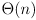
- They are invariant for rotation and translation
- It is good for local regions but problematic for whole structures
- A distance matrix is also invariant for rotaion and translation
- Comparing matrices is hard, 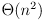
- It is not sensitive to chirality
- At the moment, all methods are able to identify obvious similarities
- Remote similarities are detected by a subset of methods, and different methods recognize different similarities
- Speed is an issue in many algorithms
- We want our method to be biologically meaningful, not only geometrically
- The expected score or random pairwise alignments is an extreme value distribution
- I would have a gaussian if there was no evolution
- In real databases I have an excess of good-scoring pairs
- When I want to determine the distribution of scores, it is better to have an analitycal distribution than an empirical one
- I don’t have tools for working with empirical distributions (!)
CE Algorthm
- Compares AFPs composed of 8 residues, stiches them together and finds an optimal path trough them with dynamic programming
- It gives a statistical score
- The alignment is the longest continuous path of AFPs in a similarity matrix S
- The similarity matrix S is composed represent all AFPs conforming to a similaritt criterion
- The dimensions of S are (na-m)(nb-m), where na and nb are the length of the sequences and m the size of the AFPs
- The matrix is large to compute, therefore we need constraints
- Two consecutive AFPs can be aligned with a gap in protein A, a gap in protein B or without gaps
- The AFP lenght is set to 6 and the maximum possible gap to 30
- Similarity measures are RMSD, full set of distances, and others
- The best 20 alignments with Z score above 3.5 are compared based on RMSD and the best one is kept
- I get an error in 1000 comparisons
- Each gap is assessed for relocation up to m/2 times
- Iteritive optimization with dynamic programming
- It cannot find non-topological alignments
- The unit of comparison was originally the protein chain, but domains are optimal
- Domains are difficult to define (!)
- The statistical distribution of alignment scores can be used to evaluate the Z score of an alignment
PDBe Fold
- It uses secondarys structure elements (SSEs)
- Secondary structure is typically conserved
- SSE are represented as vectors that connected in a graph by edges
- 2 vertices and an edge describe position and orientation of the SSEs
- SSEs are helices and strands
- Each edge is labelled by a property vector containing information on edge-vertices angles, torsion angles between vertices, lenght of the edge
- The set of vertices, edges and labels defines the graph that is then matched with an algorthm
- Vertex and edge lenghts are compare both in absolute and relative terms
- In relative terms, the same absolute difference is less significative for longer edges
- Torsion angles are used for distinguishing mirror simmetries
- The SSE matching gives correspondences among SSEs, and can be used to yeld an initial sequence alignment
- Connectivity (topology) can be neglected, considered but allow for any number of missing SSEs (soft connectivity) or allow only for an equal number of unmatched SSEs (strict connectivity)
MAMMOTH Algorithm
- Matching molecular models obtained from theory (MAMMOTH) is one of the fastest algorithms
- The protein is represented as a set of unit vectors among Ca
- It is based on dynamic programming
- An unit vector is the normalized vector among Ca atoms
- For each position, k consecutive vectors are mapped into a unit sphere that represents the local structure of k residues
- Each set of unit vectors is compare to all the sets in the other structure, building a matrix
- Each comparison yelds a unit root mean square distance (URMS)
- This is compared against the expected random URMS
- THe alignment score is obtained by normalizing the URMS with its expected value
- The path trough the matrix is found with dynamic programming by a global alignment without end-gap penalties
RNA Structure
- Most RNAs are around 50 bp
- Secondary structure of RNAs is usually represented with parenteses
- I cannot represent pseudo-knots in this way
- For RNA, the secondary strucutre is much more informative than for proteins
- A certain secondary structure constraints a lot the tertiary structure
- There is less variability in RNA strucutures than in proteins
- The best atom for representing the backbone is C3’, since it has the most constant inter-nuclotide distance
- The professor adapted MAMMOTH to work with RNA C3’ atoms instead of Ca in proteins: SARA
- The statistics of the score had to be re-evaluated
- They still used the extreme value distribution, which is defined by
 and 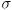
and 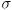 - They selected how the parameters change when RNA size changes
- The set of unit vectors was 3 instead of 7
- The method gives a -log(p-value) score
- By comparing RNAs of known function, I can determine a score threshold that gives correct functional annotation
- Another method was developped in Israel: ARTS
- Few people are working in RNA: not so many methods
- The twilight zone of RNA sequence alignment is around 60%
- Secondary structure identity (PSS) correlates well with tertiary structure identity (PSI) but not with sequence identity
Multiple Sequence Alignment
- In MSA it is easier that in pariwise alignments to identify conserved regions, that could be functionally important
- We can observe blocks of conservation in MSAs
- I can transform a MSA in a profile of the sequences
- A profile is a matrix with a row for each possible residue and a column for each position
- The value of each element reflects the frequency of a residue in a specific position
- Each position is therefore a vector of 20 elements
- I represent a profile as a matrix containing as many vectors as the number of positions
- I can also have a row for the presence of a gap in the position
- A sequence logo is a plot showing the entropy of each residue in each position
- It is obtained from a profile and it is a way to represent it
- Shannon entropy: information content of a message
- For a single colum 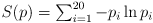
- Total conservation: 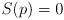
- All residues are equally probable:
- There are more sofisticated models that take into account the expected frequency of residues
- The entropy of an alignment is obtained by summing the Shannon entropy over the all alignment
- Scoring an MSA: sum of pairwise scores or entropy score
- Not all the position are equal in an MSA: some conservations are critical, others not
- Scoring has necessarily to depend on the evolutionary history of the sequences
- Almost all scoring functions assume positional independence
- I can score each pairwise alignment and sum it
- I can score an MSA depending on its entropy
- The best alignment is the one with the lowest entropy (i.e. the most conserved one)
- It is the sum over the alignment of the entropy in each position
-
- I can align a sequence to a profile
- Each position is aligned to a vector for the position
- The score for the position of the residue in the sequence with every possible residue is summed and weighted for the frequency encoded in the vector
- This is a matrix by vector multiplication (!)
- These scores can be used with a dynamic programming algortihm
Algorithms for MSAs
- Dynamic programming approaches exist, but they are 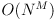 and they are np-hard
- An MSA method can be evaluated from the functionally important residues that are correctly aligned
Progressive MSA
- ClustalW is an example of progressive MSA
- I allign sequences in pairs, one after the other
- The result depends on the order of how I pair sequences (!)
- I usually pair the most similar sequences first
- Similarity is measured by Kimura distance (see MUSCLE for more info)
- From each pairwise alignment, I build a profile
- I iterate until there are no sequences left, by aligning pairwise sequences and profiles
- In order to do this I need to be able to align profiles (!)
- I want to be conservative with gaps with the initial pairwise alignments, and introduce them later on profiles
- When I get to profiles I have info about conservation (!)
- Errors in the first alignments are propagated
- If I am not conservative I can become full of gaps
- I can improve the alignment by changing the sequence tree
- By default Clustal uses NJ
- Maybe I have a tree available (!)
- Adding gaps is tricky, since their penalty logically depends on the position and conservation
- They are usually added in the fisrt alignments
- In ClustalW the penalty is multiplied by a factor which is context specific
- Gaps in hydrophobic regions are more penalised
- These coefficients were derived from gaps frequencies in a large number of structural alignments
- Gaps are discouraged if there is another gap nearby in the MSA
- Low-scoring alignments are postponed for later by adjusting the tree
- ClustalW aligns them when it has more information deriving from the profiles
- A profile-to-profile alignments involve the pairwise comparison of same-dimentional vectors
- I do a double sum all against all elements weighted with a substitution matrix
- This is done via a simple vector to matrix multiplication, followed by a multiplicatio for the remaining vector (!)
- ClustalW corrects for biased representation of subfamilies
- The scoring matrices used change depending on the similarity of the sequences to be compared
- In general, ClustalW uses an heavily crafted heuristics
- The main problem of progressive alignment: subalignments are frozen in place
- Once aligned, a group of sequences cannot be re-aligned by taking advantage of the new information deriving from other sequences
Iterative MSA
- Iterative MSA tries to overcome the problem of frozen subalignments
- MUSCLE: multiple sequence comparison by log expectations
- It is based on 3 steps: draft progressive, improved progressive, and refinement
- Draft progressive: create a first progressive MSA
- Sequence similarity is defined by k-mer distance, not pairwise alignment score
- If a rare kmer is present in 2 sequences maybe they are related
- It creates a distance matrix with all sequences against each other
- It uses UPGMA instead of NJ for building the tree from the matrix
- The score is based on log expectations, not pairwise score for profile to profile alignments
- Improved progressive: from the draft create a new matrix and from that a new tree and a new alignment
- The pairwise distances are calculated from the Kimura distance
- 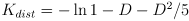, where D is the pairwise identity
- Refinement: cut and re-align the tree
- I edge is deleted at random from the tree
- The 2 resulting profiles are re-aligned to each other to get the full MSA
- If the score improves, keep the new MSA otherwise keep the previous one
- This is iterated until convergence on a local minimum
Consistency-Based MSA
- Consistency: if residue X is aligned with Y and Y is aligned with Z, then X is aligned to Z
- This is necessarily true in an MSA
- In reverse, I can use consistency to align two sub-alignments: I take advantage of transitivity of alignments
- MSA are not necessarily consistent with the repsective pairwise alignments
- Progressive MSA methods frequently are not consistent with the pairwise alignments used for building the tree
- T-Coffe (tree-based consistency objective function for alignment evaluation) is an MSA method based on consistency
- Build the primary library
- I do all the possible pairwise alignments and I measure the pairwise sequence identity
- Each pairwise alignment is equipped with a weight equal to the average identity of matched residues, ignoring gaps
- Build the extended library
- In order to align sequences A and B, I try all the possible alignment, direct and based on an intermediate sequence C
- The weight of each alignment is the minimum of the pairwise weights for the intermediate alignments
- The final weight of a position is the sum of the weights of all the possible alignments supporting it
- Maximise the pairwise alignments from the extended library with dynamic programming
- The score of each match corresponds to its weight
- From the extended pairwise alignments, build a guide tree
- Do a progressive MSA from this guide tree and the extended pairwise alignments
- T-Coffe considers both global and local pairwise alignments and it can use information about domains and motifs
MSA benchmark
- BaliBASE was the first large-scale benchmark specifically designed for MSA
- It is a dataset with manually refined alignments derived from structural superimposition
- BaliBASE is subdivided in several reference datasets
- 1 - Small number of equidistant sequences
- This is further subdivided by identity levels
- 2 - Families with one or more orphan sequences
- 3 - Pair of divergent subfamilies with less than 25% reciprocal identity
- 4 - Sequences with large extensions at the N or C terminal
- 5 - Sequences with large internal indels
- The evaluation of the benchmark is based on a series of scores
- The scores are evaluated only for columns that are reliably aligned in the reference (core columns)
- Sum of pairs score (SP score): proportion of correctly aligned residue pairs in the core columns
- Total column score (TC score): proportion of completely correclty aligned core columns
- TC and SP score both are a number between 0 and 1
- In a pairwise alignment SP and TC score are necessarily equal
- In an MSA with 3 or more sequences, SP >= TC
- Both scores encourage sensitivity, but they do not test for specificity
- There is no penalty for wrong alignments (!)
- BaliBASE also evaluates time of execution and peak memory usage
- SP, TC, memory and time are reported as Z-scores on a spiderweb plot for each alignment tool
- What comes out of the BaliBASE benchmark?
- No single method is perfect in all cases (!)
- On average, consistency-based methods are more accurate but slower
- T-Coffe suffers with N and C terminal extension
- ClustalW and MUSCLE are the least resource-heavy tools
- T-Coffe and MAFFT are well suited for alignments larger that those in BaliBASE
- Multi-threading can greatly speed-up these softwares, since there is a lot of parallel computing
- Many algos take advantage of parallel processing
Probabilistic Sequence Models
- Generative definition: a model is an object producing different outcomes (sequences) from a probability distribution
- The probability distribution in sequence space determines the specificity of the model
- The probability for model M of generating sequence s is 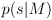
- Associative definition: a model is an object that given an outcome computes a probability value
- Models are most useful if they are trainable systems
- In a trainable model I can estimate the probability density function over the sequence space from a set of known sequences with a learning algorithm
- If I want to model the globin family, I can train my model with sequences that are know to belong to that family
- After training, I can use the model to compute the probability of an unknown sequence to belong to the globin family
- The model M given a sequence s returns the probability
- This is the probability of the model generating the sequence, not the probability of the sequence coming from the model
- Most times I am interested in the probability of a given sequence s to come from the model M 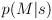
- This is the probability of a sequence being part of a specific family
- In order to compute from I need to use Bayes theorem 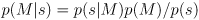
- The priors 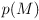 and 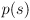 needs to be estimated to do the conversion
- is the a priori probability of any sequence belonging to the model
- This is the relative abundance of the class, relative to all possible classes
- It can be estimated from the abundance of the known sequences in the family
- is the a priori probability of the sequence and cannot be estimated reliably
- In order to avoid specifing I can compare the probabilities of 2 different models
- Instead of looking for , I look for 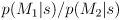 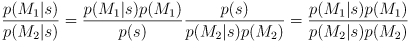
- In this way, the conditional probabilities of the sequences are easy to estimate from the models themselves
- The ratio 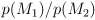 can be estimated from the relative abundance of the 2 classes (the number of proteins in the 2 families)
- To make the calculation more standard, I can systematically compare any model to the NULL model
- The NULL model N is a model that generates all the possible sequences with equal probabilities, only depending on the residue frequencies
Markov Models
- Markov Models have their most frequent application in speech recognition
- A simple Markov Model, or Markov chain is a collection of states associated with probabilities for all the possible transitions between them
- It is useful for modeling the probability of a sequence of states that only depend on the preciding state in the sequence
- I can consider each residue as a state, and I can assume that its state depends only on the previous residue
- The Markov model will contain all the possible residues and their transition probabilities
- In this framework, the transition probability is the probability that residue B follows residue A in position
 of a sequence
of a sequence - The trasition probability 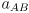 is the conditional probability of the position 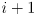 being B given that position i is A 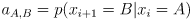
- The probability of a sequence x of lenght n is the product of all the transition probabilities at the various positions
- Here I am assuming independence of each transition 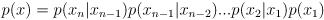 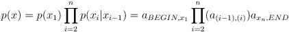
- I can also add a BEGIN and an END state to my model for avoiding irregularities
- In this case the transition probability from BEGIN to a state is the probability of starting with that state
- This is symmetrical for transitions from a state to the END state
- We treat both BEGIN and END states as the same state 0 so 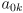 and 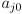 are transitions from BEGIN and to END
- There is no ambiguity since transitions are only from BEGIN and only to END
- Let’s say I want to model the probability that a given sequence is a CpG island
- In such sequence, 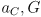 would be much higher than elsewhere
- I can create 2 different Markov chains 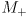 and for modelling the 2 sequences: CpG island and non CpG island
- The 2 models will have the same states but different transition probabilities
- To determine the likelihood S of a sequence x being a CpG island, i can compare the log-odds of the 2 models 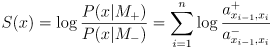
- In a Markov model, the sum of probabilities going out of a state is always 1
- It is certain that I will go out of the state
- When I have only 2 possible mutually exclusive models, I can have a measure for 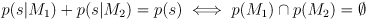
- From this, I can recover and 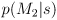 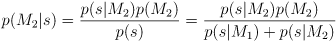
- We always work with Markov models of order 1: every state depends only on the previous 1 state
- There are also MM of order 0 or greater than 1
- A Markov Model like the ones described is parametric: It can be completely described by a set of parameters 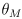 (the transition probabilities)
- Training the model means finding the optimal parameters
- The parameters for a model can be estimated from a set of training data
- For any sequence 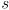 and model 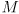, I can express as the Markov chain that can produce 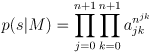
- In this representation 0 is the BEGIN state and n+1 the END state
- The probability is the product of all the possible transition probabilities 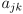 to the power of how many times they do occur 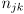
- The probability of the sequence given the model is the joint probability of all the possible paths that generate it
- The model is always under the normalization constraint 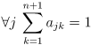
- The sum of outgoing transitions from any state must sum up to 1
- Maximum likelihood estimation: the value of a parameter is the one that maximises the probability of the dataset
 given the model and the parameter itself (given the model that uses that parameter) 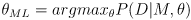
given the model and the parameter itself (given the model that uses that parameter) 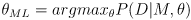
- The solution for any parameter 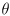 can be obtained 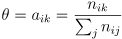
- The optimal value of the parameter is the frequence of occurrence of the transition in the dataset
- The normalization constraint forces to divide the count of transitions for the total number of outgoing transitions
- Maximum a posteriori estimation: the Bayesian correction of the ML approach
Hidden Markov Models
- Let’s now try to model the presence of a CpG island in a larger sequence
- I can integrate both models and in a single model
- I will have 2 states for each nucleotide, one for each model
- The transition probabilities inside states of the + and - models will be similar to before
- In addition I will have a small probability of going from a state of one model to any state of the other model
- It will be more probable to go from - to + than vice versa
- This means that I will be most of the time in -, so most of the sequence is not a CpG island
- This is an Hidden Markov Model since for every position the sequence itself I cannot no which state generated it
- For each possible nucleotide I have 2 states, and I do not know which one it came from
- Differently from Markov chains, in HMM we need to distinguish the sequence of states from the sequence of observables (symbols here)
- The sequence of states, which is hidden to us, is called the path 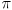 and it is a simple Markov chain
- The path has transition probabilities 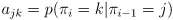
- A symbol can correspond to multiple states but also a state can generate different symbols (!)
- In general, the outcome of a single state derives from a probability distribution
- We define the emission probability of symbol b from state k as 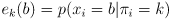
- The sum of emission probabilities from a state is always 1, so the state always produces something
- Formal definition of HMM: a stochastic generator of sequences characterized by
- 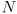 states
- A set of transition probabilities 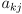 between states
- A set of starting probabilities and ending probabilities
- An alphabet 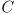 containing characters
- A set of emission probabilities for each state 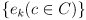
- The constraints 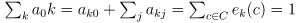
- The topology and probabilities of transitions define a global grammar
- The emission probabilities cast the propensity for observable symbols in each state
- I can write the probability of observing the sequence x of lenght L under the path 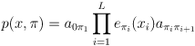
- In this equation , so the last transtition is to the END state
- The probability of a carachter being generated by the model is the product of the probability deriving from the markov chain and the emission probability for that carachter under the current state
- The path is typically hidden, so this equation is not useful in practice
- The probability of the above equation under a model M can be rewritten as
- This can be decomposed as

- Naive approach: if I want to obtain under an HMM I need to sum over all the possible paths
- The number of possible paths is the number of states elevated to the lenght of the sequence
- No way you can do that brute force
- The time complexity is where n is sequence lenght an t the number of different symbols
- There are different algorithms for computing under an HMM
- In general, my aim is to decode the path from the sequence, so that I can assess the true probability
- Viterbi algorithm: dynamic programming for finding the most probable path
- If I need to choose just 1 path the most probable one is the most logical choice
- Let’s define the most probable path
- I can find recursively
- I suppose that the probability of having state k in position i is
 and it is known for all the states k
and it is known for all the states k
- This means that I know the probability of each state in each position of the most probable path
- I can calculate recursively the probability of state l for position i+1
- The first term is the emission probability of the state l for the observed symbol
- The second term is the probability of having state k in position i times the transition probability from k to l
- In the second term I take the max in k, so I choose the k that maximises the quantity
- The problem then recurses in calculating and so on
- All sequences need to start at some point: the recursion ends in
- It is certain that the beginning of the sequence comes from state 0
- Given this framework, I can create a dynamic programming matrix that finds the optimal path
- Initialization
- Recursion with i = 1 to L (lenght of sequence)
- Termination
- Traceback with i = L downto 1
- The probabilities obtained with the Viterbi algorithm are really small and give underflow errors
- It is better to operate in log space
- This makes also the products become sums
- Forward algorithm: why only the most probable path, if I can have all of them?
- Using only as in the Viterbi algotihm is a huge approximation, but it works surprisingly well
- Actually we don’t need to do so, since we can calculate the complete probability of x for all paths
- We can just replace the maximizations of the Viterbi algorithm with sums
- We can define as the forward parallel of the Viterbi quantity
- It is the probability of state k in position i under the forward algorithm
- The probability of state k in position i is the joint probability of the sequence up to position i and the fact that the current state is k
- The recursion equation is therefore
- Like the Viterbi approach, the forward algorithm can give underflow errors
- I can correct by operating in log space or scaling the probabilities
- In log space the math is not as clean as with the Viterbi
- The time complexity is
- Backward algorithm: some as forward, but starting from the end
- The quantities that I consider here is
- It is the probability of state k in position i
- I don’t use the backword algorithm for calculating , since usually I get it with the forward algorithm
- The backward algorithm is useful for calculating posterior probabilities
- What I am really interested in is not , but
- I want to now the probability of the hidden state k being at work given the sequence
- can be decomposed as
- This is the joint probability of having
 when the sequence up to i and from i to the end is equal to the respective portions of x
when the sequence up to i and from i to the end is equal to the respective portions of x
- From this I can get the posterior probabilities
- is the result of the forward algorithm here (!)
- A posteriori decoding: when choosing the most probable path is not justified
- In some situations just choosing the most probable path (Viterbi decoding) is not legitimate
- I can have many paths with similar probabilities, and a posteriori decoding evaluates all of their contributions for any state
- For position i the a posteriori estimate for state is , as compared to of Viterbi decoding
- This probability includes all the possible paths that can bring me in position i at state k
- This definition is not very useful for determining the path, I can only decode a single state
- If I use this equation for the whole path, it can be non-sensical!
- It could include forbidden transitions
- It can give the most probable state in position given a path, and then a state in position given a different path, when the transition from the 2 is actually impossible
HMMs for Sequence Alignments
- I can see a gapped alignment as a finite state automaton (FSA) with a match state M, and two state for the respective insertions, X and Y
- In this FSA I have score changes at every state transition
- I can similarly create a probabilistic HMM with the same states
- It does not emit a sequence, but an alignment (!)
- It is called pair HMM
- The pair HMM has the following properties
- The state M has emission probabilities for all possible matches
- State X has emission probabilities for all possible single charachter insertions in X (or delitions in Y) such as
- State Y has emission probabilities for all possible single charachter insertions in Y (or delitions in X) such as
- We introduce a BEGIN and END state
- The transition probabilities are called
- for M->X,Y
-
 for Y->Y and X->X
for Y->Y and X->X - for M,Y,X -> END
- The other probabilities can be derived from the complements to 1
- Every position in the pair HMM has two indexes intead of 1
- The Viterbi path of the pair HMM is the optimal FSA alignment (!)
- It is the one I would recover from the NW algorithm
Profile HMMs
- Profile HMMs are the most important application of HMMs to bioinformatics
- They were first done by Krogh (the one from Denmark)
- In the ungapped case, I just want to model the propensity of the position for a symbol
- The profile HMM will have for each state M emission probabilities deriving from the profile vector at that position
- Introducing gaps, we see how their penalty shouldn’t be the same across the alignment
- I can introduce the insert (I) state for modelling insertions in my sequence with respecty to its family profile
- The I state has emission probabilities deriving from background distribution
- We need a transition from to , a loop from to itself and a transition from to
- This model is essentially an affine gap
- The deletion could be modelled by a series of transitions from to all , all the subsequent states
- This requires n(n-1)/2 transitions, and I need probabilities for all of them
- To avoid this I insert silent states D for modelling deletions
- A silent state is a state that does not emit any symbol
- Now I have transitions from to and from to
- I can enter in a delete state (and not add anything to my sequence) and continue there
- I have also transitions to for modelling when the deletion ends
- In this way I have 4n-8 parameters
- This delete model has different transitions in different positions, so I can include a position-specific gap penalty!
- In my insert model I cannot do this, since I have loops for long insertions in the same I state
- This makes sense since The insertion only matters where it starts and how long it is
- For deletions it matters which residues are missing from the family profile!
- As a final refinement, I can include transitions between delete and insert states
- They are quite unlikely and usually they do not affect much the alignment
- These are to and to
- Any profile HMM is able to produce any possible seuqence in sequence space
- Parameterising a profile HMM means to make the probability distribution of the produced sequences peak around members of the modelled family
- We can play with transition and emission probabilities, and with the lenght of the model itself
- Modelling the lenght of the model means to decide which MSA columns to assign to match states, and which to insert states
- A heuristic rule is to assign to insert states the columns that have more than half gaps
- Probabilities can be estimated from the transition and emission frequencies of the sequences in the MSA
- For this to be meaningful, I need a big training set
- There can be transitions or emissions with 0 probability due to sampling limitations
- We can add pseudocounts for coping with this
- I can evaluate the score of an alignment to a profile with the profile HMM
- I can calculate with Viterbi or with the forward algorithm
- I can use the log-likelyhood as the alignment score
- It is strongly lenght dependent and in a not linear fashion (!)
- I can normalize it obtaining a Z-score
- For the normalization I need a and a for the length-dependent score distribution
- I can also use the log-odds against the NULL model
- This has usually a 3 times better signal-to-noise ratio in discriminating families
- The NULL model is obtained from the residue composition of the training set
- The accuracy of a prediction can be evaluated on the confusion matrix
- It is a simple 2*2 matrix that relates true and false positives and negatives
- The variables under consideration are the true condition and the test outcome
- The accuracy ACC can be evaluated from the confusion matrix
-
- This measure can be biased if the classes (positive and negatives or prediction 1 and prediction 2) are highly unbalanced
- A better approach is to evaluate sensitivity (True positive rate , TPR) and specificity (Positive predicted value, PPV)
- The Matthews correlation coefficient (MCC) is the analogous of Pearson for categorical predictions
-
- It measures the correlation among predictions and real classes
- It is not affected by class unbalance
- The ROC curve (receiver operating carachteristics) is a plot of FPR (false positive rate) against TPR (true positive rate) when a parameter varies
- This can be a tuning parameter
- The area under the ROC curve is 0.5 for random predictions ad 1 for a perfect predicition
HMMER
- HMMER is a widely used tool for creation of HMMs from MSAs
- It is used for searching a sequence database for homologs and for making sequence alignments
- It is design for detecting remote homologs relying in the strenght of its probabilistic models
- The last version of HMMER is as fast as BLAST
- Its HHMs are based on a domain structure
- They present a domain chain defined by M, I and D states
- The domain chain is connected by 2 states that model the C and N terminal regions of the domain
- A J state models inter-domain regions
- The score of a sequence is calculated in the Bayesian frame against the NULL model
- The NULL model takes into consideration only background frequencies of aminoacids
- By default the frequencies in Swiss-Prot are used
- The Log-odds score is actually a bit score (it uses a )
- HMMER takes the trained model and scores 200 randomly generated sequences with it in the Bayesian framework
- I do not use an analytical estimate of the p-value, but I evaluate it from bootstraps!
- The Log odd of the sequences is fitted with a Gumbell distribution
- This allows to estimate the distribution parameters and

- Once I have the score distribution of random sequences, I can get the p-value of a sequence that I score against the model
- From the p-value I can obtain the e-value, the number of random sequences expected to have score greater than
-
- E is the average number of rare events, modelled under the Poisson distribution
- The default input format is the textual Stockholm format, but it accepts many common formats
- The header is
# STOCKHOLM 1.0 were 1.0 is the version used
- It has then one row per sequence in the MSA, wrapped in a readable way
- Between sucsessive wrappings of the MSA there is an empty line
- Gaps are rendered with
.
- The last row contains always only
//
- It can include also info on secondary structure and can indicate to mask some carachters
- These information are rendered with a new line in the MSA that has a peculiar name
#=GC SS_cons is used to store information on the consensus secondary structure#=GC RF stores the reference annotation (the consensus sequence)
- Upper and lower case can be used to denote the conservation level
~ indicates an unaligned insertion
#=GC MM specifies a model mask, which columns of the MSA should be ignored
- Ignored columns are assigned a match state with background distribution
- It is composed of several tools
hmmbuild takes an msa and gives an HMMhmmemit generates a sample sequence from the HMMhmmsearch searches a database with the HMM returning a list ordered by e-valuehmmalign alignes sequences to a given modelhmmpress converts one or more concatenated HMMs in binary for subsequent searcheshmmscan uses a binary HMM library to scan a sequence
- It finds which model best matches the sequence
- The HMMER profile HMM text file is the output of the
hmmbuild command
- It can also contain more than 1 profile separated by a row with
//
- It has an header with miscellaneous key:value pairs for each profile
- The header ends where a row starts with the keyword
HMM
- Follows a table of (
* is used when and so the is not defined) - An optional
COMPO line follows, with the backgroung emission probabilities used for the NULL model
- The next 2 lines code information on the BEGIN state
- The first line codes the INSERT emission probabilities for the 0 state
- The second line codes the TRANSITION probabilities for state 0
- It contains then 3 rows for each position of the profile
- The first row contains the 20 emission probabilities for each aminoacid in that position
- The second row contains the Insert emission probabilities for that position
- The third row contains transition probabilities
- The
hmmsearch output is a text file returning a list of sequences that passed the threshold, set of scores for each sequence, and an alignment of each sequence with the profile
- The header contains a series of key:value pairs
- MSV is the multi-segment Viterbi filter
- The expected counts for the sequences that pass each type of filter should be much lower than the actual counts
- For each sequence several scores are shown in the tabular section
- The following scores are differentiated as global and best domain scores: E-value, bit-score, bias
- The bias is a correction factor that should be much smaller than the bit-score
- An high bias indicates a biased composition or repetitive sequence
- A significant global domain E-value and not significant best-domain E-value may indicate a remote multi-domain homolog with weak similarities that add up on the whole sequence
- In the alignment part there are 3 rows per sequence
- The first is the profile row and it codes the preferred symbolin each position
- Conserved positions are represented in capital letters
- The midline shows the symbol of the position in case of conservation, or
+ in case of a substitution that has a positive score (conservative substitution)
- A space is shown when a non-conservative substitution is present
- The bottom line codes the posterior probability for each residue
* indicates 95-100% probability, and number from 0 to 9 indicate lower probabilities
- Other scores and parameters are detailed in this section
- The c-Evalue is the conditional E-value: the significance of the domain given that I know the sequences are homologs
- The i-Evalue is the independent E-value, the independent significance of the best domain
- The envelope (
envfrom and envto) is the best aaligned portion
acc is the a posteriori mean per residue probability
hmmalign produces an MSA in STOCKHOLM format
Kunitz Domain Project
- We want to produce a profile HMM of the Kunitz protease inhibitor domain
- The Kuniz domain is a protease inhibitor
- BPTI, APP (Alzheimer) and TFPI (Tissue factor inhibitor) have this domain
- BPTI is an inhibitor of trypsin that blocks the activation of trypsinogen in the pancreas due to spontaneous clevage
- It is also found in the bovine lung
- Aprotinin (the protein BPTI) is a drug that act as an anti-fibrinolitic, it is used for reducing bleeding during surgery
- Apoprotin is a monomeric globular polypeptide obtained from bovine lung tisssue
- Its molecular mass is 6512 Da and it is composed of 58 residues
- It folds into a compact tertiary structure of the small SS-rich type
- It contains 3 disulfide bridges, a twisted
 -hairpin and a C-terminal
-hairpin and a C-terminal  helix
helix - It contains 10 positive residues and only 4 negative residues: it is strongly basic
- The stability of the protein is due to the 5:55, 14:38, 30:51 disulfide bridges
- Lys15 in the exposed loop binds tightly to the specificity pocket of trypsin
- BPTI is synthesized as a longer precursor that is then cleaved to the final form
- The domain is included in single-domain and multiple-domain proteins
- It is preferred to build HMMs with single-domain proteins if available in enough number, since other domains nearby could influence the structure of my domain
- We want to build our HMM of the Kunitz domain starting from structural information and use the model for annotating SwissProt
- The Kunitz domain is exclusive of metazoa with a single exception: Amsacta moorei entomopoxvirus
Retriving the Structures
- Several options available
- We can use PDBfold searching with a prototype structure
- We can search on CATH
- Potential problems
- PDBs with multiple chains
- Chains with multiple domains
- Redundant PDB structures: I can get more copies of the same protein
- Mutated proteins for experimental reasons
- Variable resolution
- Possible solutions
- Accept only structures with resolution above 2.5-3
- Interaction and distances are on this range, while H bonds are around 3 long
- I select a set of seed proteins and I refine them on the basis of the structural alignment
- I convert the alignment in Stockholm format with Jalview or with a script
Creating and Testing the Model
- I use
hmmbuild to get the model from the alignment
- I scan the original seed set wtih my model with
hmmscan to see If I get a significant E-value
- I do a real benchmark with non-seed proteins that I know to have the Kunitz domain
- Since SwissProt is manually annotated, I can define a subset containing all the Kunitz-containing proteins
- I also need a set of negatives to test the specificity of the model
- I need to define the confusion matrix for my model
- I can use the Matthews correlation to give a quality score to my model
- I can plot a ROC curve
- The Kunitz domain is really well defined and annotated, so I expect few false negatives and positives
- I can manually review all of them and understand where the model failed
- It is important to understand the limitations of my method!
Project Report
- To be done following the structure of the Oxford Bioinformatics journal
- I should put an abstract with information about the problem and summary of the results
- Introduction should contain info on the domain, previous work, ecc.
- It will contain most of the citation
- It should describe the state of the art
- Materials and methods: in bioinformatics mostly only methods
- Defines the reproducibility of the work
- I should describe procedures, algorithms, validation
- I should describe the dataset
- Results: what I did with the methods and what I got out of it
- I should include subsections in all parts
- People can be interested only in some aspects!
- Conclusion/discussion: summarise, discuss the limitations and future directions
- I should start from materials and methods and results
- At the end I write conclusion and introduction
- Reference: always to be included
- Supplementary materials can be included
- Note: there will still be a final exam
- Deadline: May 18 and then 3 weeks after it for the final version
- To be sent by mail at emidio.capriotti@unibo.it with object should be “project lb1b - Saul Pierotti”
Predicting Structural and Functional Fetures from the Sequence
- The computational approach used for predicting structural features from protein sequence is divided in 3 main branches, depending on the availability of suitable templates: homology (comparative) modelling, fold recognition (threading), and de novo (ab initio) prediction
- Comparative modelling requires the availability of a template with more than 30% sequence identity
- The use of multiple sequence alignments and HMMs allow to extend the use of comparative modelling to remote homologs
- Nonetheless, sometimes comparative modelling fails
- If no suitable templates exist in the PDB Ab initio methods are required
- If there are suitable templates in the PDB but they cannot be recognised, threading/fold recognition can be adopted
Ab initio Structural Predictions
- It is used when there are no structures in the PDB that can be used as templates in modelling my sequence
- Ab initio predictions are difficult because the conformational space is huge
- The goal is to predict the structure using only the sequence
- This methods are based on the assumption that the native structure is the one with lowest energy
- The CASP (critical assessment of structural predictions) evaluation is a contest from the UC Davis aimed at assessing the performances of protein structural prediction methods
- It has different sections for ab initio predictions, comparative modelling
- Ab initio methods are generally based on molecular dynamics (MD) force fields
- CHARMM is the force field that is traditionally used for proteins
- It was developped by the Nobel prize winner Martin Carplus at Harvard
- It uses bonding, angle, dihedral, and non-bonding energy terms
- Bonding energy refers to the oscillations around the optimal bond lenght
- Angle refers to the angle of 2 bonds among 3 atoms
- Dihedral referso to the torsion of a central bond among 3 bonds and 4 atoms
- Non-bonding contributions are electrostaic and Lenard-Jones energies
- Molecular dynamics require a lot of computing power and therefore approaches using it are confined to small proteins
- MD cannot take into account chaperon activity
- It is not trivial to define criteria for a successfull model
- Ab initio is computationally very hard for sequences longer than 150 aa
- AlphaFold from Google DeepMind, the winner of CASP13, seems to be able to predict also longer proteins
- Rosetta (David Becker) is the most accurate fragment-based prediction methods according to CASP8
- It is based on short fragments that are used as building blocks of the global fold
- An energy landscape is built for these fragments
- All proteins in the PDB were collected and fragmented in blocks of 5 residues, and similar fragments were clustered based on RMSD
- A sequence profile was built from each cluster of fragments
- When modelling a new sequence, the query was broken in fragments and aligned to the profiles
- Some heuristcs were used for choosing the best match
- The structure was then refined with molecular dynamics
Threading
- Threading is used for sequences that have a suitable template in the PDB but we cannot find it based on sequence alone
- Proteins with different sequences can have similar structures!
- A sequence of unknown structure is threaded onto a known structure and the goodness of fit is evaluated acconrding to a scoring function
- Anna Tramontano was a researcher involved in evaluating the CASP challenge that died 2 years ago
- Threading is a generalization of comparative modelling
- I align the target sequence not to another sequence (comparative modelling) but to structure templates and I evaluate the probability of finding each residue in that conformation
- The probability is assessed based on the preferences observed in determined structures
- The rationale behind threading is that there are a limeted number of basic folds naturally occurring in proteins and the preferences of aminoacids for different structural environments is sufficient for discriminating a good-fitting fold
Fold Recognition
- Fold recognition is based on the idea that even if I cannot align the sequences of 2 proteins I can probably still align secodary structure elements and other features
- Other features can be solvent accessibility profiles, disulfide bonds, …
- For doing fold recognition I need to assess the features of the sequence
- For doing threading I need to first align the sequences to known folds
- If the homology is remote I need to align them through fold recognition approaches
- Predicting sequence properties is a mapping problem
- Secodary structure prediction: from a sequence of aminoacids to a sequence of secondary structures
- I am mapping a 20-letter alphabet to a 3-letter alphabet
- Transmembrane regions: I want to map the sequence to the possible states in the membrane/out of the membrane
- The simplest approach for addressing these mapping problems is to use a propensity scale for each residue
- It is a table of preferences of each residue for each mapped state
- The AAindex is a database of propensity scales for residues
- AAindex1 contains properties at the residue level (hydrophobicity, ecc…)
- AAindex2 contains substitution matrices
- AAindex3 contains propensities for interactions among aminoacids
- It shows for each entry also the correlation with other scales
- The most used propensity scale for secondary structure is the Chou-Fasman scale:
- First they calculated how frequently a certain residue was found in each secondary structure ( with A being the residue and h the seocndary structure)
- Then they corrected it for the independent probabilities for the residue and for the structure ( )
- The propensity is therefore defined as
- If there is no correlation among and , then and therefore the propensity is 1
- If the propensity is bigger than 1 the residue tends to be in that structure more than expected
- If it is smaller than 1 the residue tends to avoid that structure
- The original Chou-Fasman scale was built in 1974 from only 19 proteins, but the propensity scales did not change much also re-evaluating it with the current dataset
- An updated version is available at AAindex
- The Chou-Fasman is not accurate, the accuracy evaluated on a set of uncorrelated sequences with known structures is around 50/60% whith 3 classes
- It is 3-class classification, so it is not actually that bad but also not so useful in practice
- It is possible to improve the result by evaluating the average propensity of a sliding window, instead of that of single residues
- The original algorithm used a 4 residue window
- We can get better results by using neural networks
- The Kyte-Doolittle scale for hydrophobicity combines the partition coefficientin octanol/water with the propensity for a residue to being found in a transmembrane helix in known structures
- It is positive for hydrophobic residues and negative for hydrophilic ones
- Second generation methods are based on the observation that the structure of a residue in a protein strongly depends on the sequence context in which it is found
- Sliding windows of -8/8 to -13/13 residues are often used
- The GOR method (Garnier, Osguthorpe, Robson) was developped after the Chou Fasman scale and it also aims at the prediction of secondary structure from sequence
- It evaluates a score for each structure class at each position as
- The GOR scale was also built from a set of known structures (25 in this case!) but it takes into account not only the propensities of individual amino acids to form particular secondary structures, but also the conditional probability of the amino acid to form a secondary structure given that its immediate neighbors have already formed that structure
- It uses an -8/8 residues sliding window, assuming that the conformation of the central residue is influencedby the 17 neighboring residues
- The frequency of each of the aminoacids in the 17 positions in the window was evaluated for and turn conformations
- This generates 3 17*20 matrices of frequencies
- This information is used for predicting the conformation of the central residue in the window
- It is more accurate than Chou Fasman but it is still not comparable with modern methods: it reaches 64% accuracy
- The information function for the GOR scale encodes how much information the sequence at contains about the structure

- is one of the 3 possible secondary structures at position
- is on of the 20 residues at position
- is the prior probability of that structure
- If it there is no information in , if favors , if avoids
- The GOR scale is making assumptions to simplify the prediction of the secondary structure
- In reality, the secondary structure depends on the whole sequence, but the GOR scale assumes that it only depends on the local sequence (the sliding window)
- Each position is assumed to be statistically independent, and so the probabilities can be multiplied (summed in log scale)
Protein Structure Analysis
- Some numbers in biological databases at April 2020
- GenBank: 216M entries
- UniRef90: 109M entries
- Swiss-Prot: 562k entries
- PDB: 163k entries (redundant!)
- Protein folding is the process by which a protein assumes its native conformation from the unfolded structure
- Anfinsen’s hypothesis states that there is a native structure for each protein and the sequence alone contains all the information required for reaching the native form
- Anfinsen showed that the denatired ribonuclease A returns active after the denaturing agent is removed
- Levinthal’s paradox: the conformational space for a protein is huge and it cannot be fully explored by the protein in a time equal to the age of the universe
- A 100 residues protein with 2 possible conformations per residue has possible conformations
- If a conformation can be visited in seconds, exploring the full conformational space will take seconds
- The univers now is seconds old
- The Anfinsen’s dogma postulates the uniqueness, stability, and kinetical accessibility of the native fold
- The native structure is the only one with a free energy that low, in physiological conditions
- There are fluctuations and bi-stable conformations, but in general this is true
- The native structure is stable against small fluctuations in the environment: it is in a local (and possibly global) energy minimum
- The path in the free energy surface for reaching the folded state has a low kinetic barrier, so that it is possible to reach the folded state in reasonable time
- The solution to protein folding consist of studying 3 different aspects of theproblem: thermodynamics, kinetics, and conformation
- I want to estimate the stability (thermodynaics) of the native conformation
- I want to define the conformational path from the unfolded to the folded state, and the associated kinetics
- I want top predict what the native conformation will be
- Thermodynamics: the
 of folding is typicall small, around -5/-15 kcal/mol
of folding is typicall small, around -5/-15 kcal/mol
- It is less than the energy of a covalent bond (-30/-100 kcal/mol)!
- It is comparable to the energy of a salt bridge
- Various interactions contribute to the stability of the native state, but they are NOT the driving forces of folding
- The hydrophobic collapse of the globular core is the driving force of folding
- Water molecules form a cage-like structure around hydrophobic surfaces
- The of the hydrophobic effect is positive since breaking the cage requires energy
- The is positive since water molecules are less constrained when freed from the hydrophobic surface
- Kinetcs: the protein folding mechanism depends on the free energy conformational landscape
- An higher activation barrier corresponds to a longer folding time
- Protein structure is hierarchically organised in primary, secondary, tertiary, and optionally quaternary structure
- Secondary structure elements are the -helix, the -sheet and the random coil
- The alpha-helix is genrally right handed, with ° and
 °
°
- Side chains are projected backwards and outwards
- The pitch of the helix is
- There are 3.65 residues per turn
- The core is tightly packed and formed by backbone atoms
- The N-H of one aminoacid forms an H bond with the C=O of 4 residues earlier
- The H bonding pattern gives to the helix a dipole moment
- The beta-strand has ° and °
- The side chains project alternating above and below the strand
- The conformation is more extended than in helices
- Beta-strands can form parallel or anti-parallel beta-sheets
- Parallel beta-sheets are less stable than the anti-parallel ones
- The arrangement of secondary structure elements forms the tertiary structure of the protein
- The arrangement of 2 or more proteins in a complex gives rise to the quaternary structure
- A PDB file contains the 3D coordinates of all the atoms (except H usually) in a protein
- A protien structure is well defined by and angles, side chain rotamers, and solvent accessible area
- The dihedral angles define the secondary structure
- The Ramachandran plot is a plot of and angles for each residue in a protein
- Distinct regions of the plot are assigned to and conformations
- Some regions are not allowed by steric hindrance
- The Ramachandran plot of a model can be used to estimate its quality thanks to the knowledge that we have about disallowed regions, deriving from well-determined experimental structures
- DSSP (define secondary structure of proteins) is an algorithm that calculates and angles, solvent accessibility, secondary structure and other features from a 3D structure
- It is both available as a web server and as an installable package
- For each residue in a PDB structure it calculates the dihedral angles and the solvent accessibility
- From these pieces of information it determines the secondary structure using the Ramachandran plot